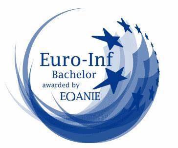
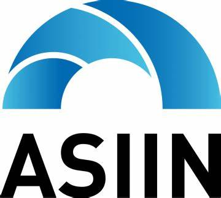

Return to portfolio

Description:
C’est un organisme d’enseignement supérieur privé agréé par le Ministère de l’Enseignement Supérieur et de la
Recherche Scientifique. Il a été inauguré le 23 Août 2012.
Accrédetation:
L’Institut International de Technologie de Sfax (IIT), porté par l’ambition de la qualité et le souci de
l’excellence, a su et pu se faire un nom et une renommée dans le monde universitaire national et international.
Durant ces quelques années, IIT a acquiert une réputation de rigueur et notamment d’ouverture à l’international. La
mission principale demeure celle de doter ses diplômés, grâce à la qualité des enseignements, et aux nombreuses
certifications, des meilleures chances de faire face aux nouvelles exigences d’un monde professionnel
internationalisé.
Dans cette quête de l’excellence, IIT a été honoré récemment par l’acquisition des labels EUR-ACE® en Génie
Industriel et EURO-INF® en Génie Informatique attribués par l’organisme allemand d’accréditation des programmes
d’études ASIIN (Accreditation Agency for Degree Programs in Engineering, Informatics/Computer Science, the Natural
Sciences and Mathematics) en sa qualité de membre fondateur de l’ENAEE (European Network for Accreditation of
Engineering Education).
La labellisation accordée à l’Institut International de Technologie ne peut que confirmer le haut niveau d’exigence
et la qualité de formation assurée au profit des étudiants.
Dans ce contexte, la reconnaissance des formations par des organismes d’évaluation internationaux revêt une grande
importance. En effet, EUR-ACE® et EURO-INF® sont les précieux sésames qui contribuent à la visibilité internationale
de l’IIT et représentent bien évidemment des opportunités qui ouvrent les portes de la reconnaissance de
l’excellence académique par les nouveaux partenaires potentiels. C’est pourquoi l’Institut ne cesse de promouvoir et
soutenir toute action et toute démarche favorisant l’internationalisation de ses programmes.
Cette prestigieuse reconnaissance de la qualité de formations est une fierté pour l’enseignement supérieur et
particulièrement pour la région du sud de la Tunisie vu qu’elle est la première et l’unique institution à acquérir
ces deux labels au niveau des universités privées et même étatiques, d’autant plus que seulement quelques
universités à l’échelle nationale qui ont obtenu ce label délivré par un organisme allemand tel que l’ASIIN.
Ce label permet de garantir les compétences et les connaissances acquises par les étudiants qui sont conformes aux
normes internationales, les meilleures chances pour affronter les exigences du marché du travail et surtout pour la
mobilité à travers le monde entier. Bref, l’accréditation est un atout valorisant pour un étudiant.


Formations:
- ARCHITECTURE
- ersmus
- GÉNIE CIVIL
- GÉNIE DES PROCÉDÉS
- GÉNIE DES TÉLÉCOMMUNICATIONS
- GÉNIE INDUSTRIEL
- GÉNIE INFORMATIQUE
- GÉNIE MÉCANIQUE
- LICENCES
- projet intesa
- MASTÈRES
Localisation:
Campus sud: Route Mharza km 1,5 Sfax
Campus nord: route tunis km 10